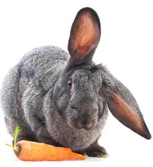

|
Welsh RarebitAnglo / American | |
RAREBIT, n. A Welsh Rabbit, in the speech of the humorless, who point out that it is not a rabbit. To whom it may be solemnly explained that the comestible known as toad-in-a-hole is really not a toad, and that riz-de-veau à la financière is not the smile of a calf prepared after the recipe of a she banker.- Ambrose Bierce "Welsh Rabbit" predates the "Welsh Rarebit" in literature. The word rarebit appears in no other context, thus was certainly made up by some clueless scribbler. See Welsh Rabbit. |